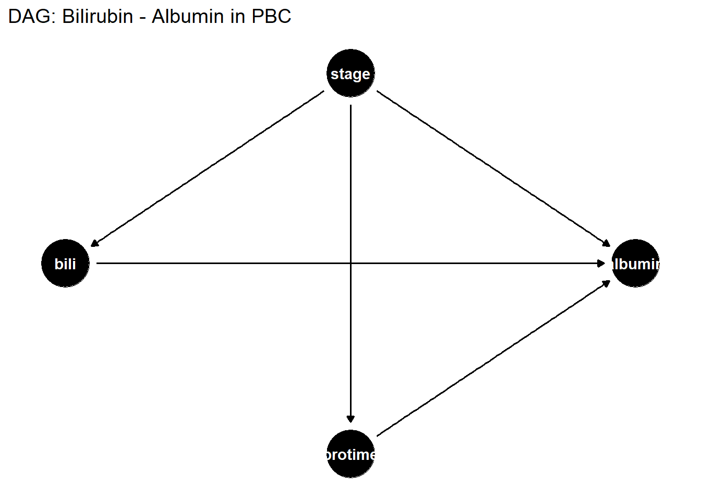

You have found a statistical association between an exposure and an outcome, but associations can arise from confounding, reverse causation, or selection bias rather than a true causal effect. Causal inference provides the framework for deciding whether an observed association reflects a genuine causal relationship, what “adjusting for confounders” really means, and why adjusting for the wrong variables can make things worse rather than better. For example: patients who take aspirin have lower bilirubin, but does aspirin reduce bilirubin, or do healthier patients simply take aspirin more often?
17.2 Learning Objectives
After completing this session you will be able to:
Distinguish association from causation and explain why regression alone cannot establish causation
Draw and interpret a directed acyclic graph (DAG) for a research question
Identify confounders, mediators, and colliders from a DAG
Apply the backdoor criterion to select a valid adjustment set
Recognise and avoid collider bias and mediation bias
17.3 Background: Why Associations Are Not Causes
17.3.1 Potential Outcomes Framework
For each individual \(i\), define: - \(Y_i(1)\): the outcome if they receive treatment - \(Y_i(0)\): the outcome if they do not
The individual causal effect is \(Y_i(1) - Y_i(0)\), but we can only ever observe one of these (the fundamental problem of causal inference). We estimate the average treatment effect (ATE):
\[ATE = E[Y(1) - Y(0)]\]
In an RCT, randomisation ensures that the treated and untreated groups have the same distribution of potential confounders, so the observed difference in means estimates the ATE. In observational data, we must adjust for confounders, but we need to know which variables to adjust for.
17.3.2 Directed Acyclic Graphs (DAGs)
A DAG encodes the investigator’s causal assumptions as a graph where arrows represent direct causal effects and the absence of an arrow represents the assumption of no direct effect.
Three key structures:
Structure
Diagram
Rule
Fork (confounder)
\(X \leftarrow C \rightarrow Y\)
Adjust for \(C\) to block the backdoor path
Chain (mediator)
\(X \rightarrow M \rightarrow Y\)
Do not adjust for \(M\) if estimating total effect
Collider
\(X \rightarrow C \leftarrow Y\)
Do not adjust for \(C\) - this opens a path and introduces bias
17.4 Example 1: Drawing a DAG for PBC
17.4.1 The Research Question
Does bilirubin causally affect albumin in PBC patients, or is the association confounded by disease severity (stage)?
dag <- dagitty::dagitty('dag { bili -> albumin stage -> bili stage -> albumin stage -> protime protime -> albumin}')dagitty::coordinates(dag) <-list(x =c(bili =0, albumin =2, stage =1, protime =1),y =c(bili =1, albumin =1, stage =2, protime =0))ggdag::ggdag(dag, layout ="auto") +theme_dag() +labs(title ="DAG: Bilirubin - Albumin in PBC")

17.4.2 Identifying the Adjustment Set
# What must we adjust for to estimate the causal effect of bili on albumin?dagitty::adjustmentSets(dag, exposure ="bili", outcome ="albumin")
{ stage }
The backdoor criterion says: block all non-causal paths from bili to albumin. In this DAG, stage is a common cause (confounder) - it opens a backdoor path. Adjusting for stage closes this path.
17.4.3 What If We Adjust for a Mediator?
dag2 <- dagitty::dagitty('dag { bili -> protime protime -> albumin bili -> albumin}')dagitty::adjustmentSets(dag2, exposure ="bili", outcome ="albumin",effect ="total")
{}
If protime is on the causal pathway from bilirubin to albumin (a mediator), adjusting for it blocks part of the effect of bilirubin. We would then estimate only the direct effect, not the total effect. Be explicit about whether you want total or direct effects.
17.4.4 Collider Bias: A Demonstration
set.seed(2024)n <-1000# Simulate: exercise and diet both independently affect BMI# But exercise and diet are NOT associated in the populationdf <-tibble(exercise =rnorm(n),diet =rnorm(n),bmi =-0.5* exercise -0.5* diet +rnorm(n, 0, 0.5))# Unadjusted: no correlation between exercise and dietcat("r(exercise, diet) =", round(cor(df$exercise, df$diet), 3), "\n")
Restricting to low BMI (conditioning on the collider) creates a spurious negative correlation between exercise and diet. This is collider bias - conditioning on a common effect of two variables induces an association between them.
Practical example: In a study of ICU patients, restricting the sample to those admitted to ICU (a collider of severe illness and random events) can make risk factors appear protective; this is Berkson’s paradox.
17.5 Example 2: Propensity Score Analysis
When randomisation is not possible, propensity score methods attempt to balance confounders between treatment groups.
Good overlap (positivity) is required for propensity score methods to work. If the groups are completely separated on the propensity score, there is no common support; the causal question cannot be answered from these data alone.
IPTW creates a pseudo-population in which treatment assignment is independent of confounders. The weighted outcome difference estimates the ATE.
17.6 Where to Find Data Like This
survival::pbc: Real RCT data: bilirubin, albumin, stage, prothrombin time, ideal for DAG-based confounding analysis.
dagitty.net: Free online DAG tool: draw, encode, and query adjustment sets without R.
ggdag and dagitty R packages: Programmatic DAG construction, visualisation, and adjustment set identification.
17.7 What Can Go Wrong
Adjusting for everything Adding all available variables to a regression model is not “conservative” - it can introduce collider bias if any of those variables is a collider. Always draw a DAG before deciding what to adjust for.
Over-adjusting for mediators If you adjust for a mediator, you estimate the direct effect of exposure on outcome. This is only correct if your research question specifically asks about the direct effect. For most aetiological questions, you want the total effect, which means not adjusting for mediators.
Confusing statistical control with causal identification A regression coefficient “adjusted for X” does not automatically equal the causal effect. The causal interpretation requires the DAG-based assumptions to hold: no unmeasured confounders, correct functional form, no measurement error in confounders.
Positivity violations in propensity score methods If some patient subgroups always or never receive treatment (deterministic treatment), inverse probability weights become extreme or undefined. Trim weights or restrict the analysis to the region of common support.
17.8 Exercises
17.8.1 Exercise 1 (Guided): Draw and Query a DAG
Consider this question: “Does albumin mediate the effect of disease stage on mortality in PBC?”
Draw a DAG with nodes: stage, albumin, bili, died. Include arrows based on your biological knowledge.
Use dagitty::adjustmentSets() to find what to adjust for when estimating the effect of stage on died (total effect).
Is albumin a mediator, confounder, or collider in this DAG?
TipExercise 1: Solution
dag_ex <- dagitty::dagitty('dag { stage -> albumin stage -> bili stage -> died albumin -> died bili -> albumin bili -> died}')dagitty::adjustmentSets(dag_ex, exposure ="stage", outcome ="died",effect ="total")
{}
# albumin is a mediator (stage -> albumin -> died)# adjusting for albumin would block part of the total effect
Using the pbc dataset and the propensity score model fitted above:
Check covariate balance before and after weighting: compare mean log_bili, albumin, log_proto between treatment groups in the raw data and in the IPTW-weighted data.
Is balance achieved? What is the standardised mean difference for log_bili before and after weighting?
TipExercise 2: Solution
# Raw SMDsmd <-function(x, treat) { d <-mean(x[treat ==1]) -mean(x[treat ==0]) s <-sqrt((var(x[treat ==1]) +var(x[treat ==0])) /2) d / s}cat("Raw SMD log_bili:", round(smd(pbc$log_bili, pbc$trt_d), 3), "\n")
For your own observational research question: 1. Draw a DAG encoding your assumptions about the data-generating process. 2. Use dagitty::adjustmentSets() to identify the minimal sufficient adjustment set. 3. Check whether any of your standard covariates might be colliders or mediators. 4. Write a Causal Assumptions section for your Methods, describing the DAG and justifying each arrow.
17.9 Comprehension Check
You adjust for 15 variables in a regression “to be safe.” Why might this make your causal estimate worse?
You restrict your analysis to hospitalised patients to reduce confounding by severity. A colleague says this introduces collider bias. Explain why.
You want the total effect of bilirubin on mortality. Should you adjust for albumin if albumin is on the causal pathway? Why?
Propensity scores are estimated from a logistic model. You get an AUC of 0.95. Is this good for IPTW?
The treatment effect from an RCT is -0.3 g/dL for albumin. Your observational IPTW estimate is -0.05 g/dL. What might explain the discrepancy?
NoteAnswers
Adjusting for a collider opens a backdoor path that was previously closed, inducing a spurious association. Adjusting for a mediator removes part of the causal effect, biasing toward the null. Without a DAG, you cannot know whether your covariates are confounders, mediators, or colliders; adding all of them can introduce more bias than it removes.
Hospitalisation is a common effect of the exposure (e.g., bilirubin) and other causes. Restricting to hospitalised patients conditions on a collider, creating a spurious association between bilirubin and those other causes within the hospitalised sample. This is Berkson’s paradox.
No; if albumin is a mediator on the causal pathway from bilirubin to mortality, adjusting for it blocks that pathway and estimates only the direct effect of bilirubin not mediated through albumin. To estimate the total causal effect of bilirubin (including the pathway through albumin), you should not adjust for albumin.
A high AUC (0.95) for the propensity score model means treatment and control groups are almost perfectly separable based on covariates. This is actually problematic for IPTW: patients near the boundary of the score distribution will have extreme weights (very high or very low), causing instability and high variance. Good overlap is signalled by a moderate AUC (0.6?0.8). With AUC = 0.95 you should check for positivity violations and consider weight trimming.
Several explanations: (1) Unmeasured confounding: IPTW only adjusts for measured covariates; if key confounders are unmeasured, the observational estimate is biased. (2) Selection bias - the RCT may have enrolled a different population. (3) Non-adherence in the RCT - the -0.3 is an intention-to-treat estimate, potentially diluted by non-compliance. (4) Positivity violations in the IPTW analysis leading to biased estimation. Comparing RCT and observational estimates is a useful internal validity check.
17.10 How to Report
NoteReporting a Causal Analysis
In a Methods section:
“We used a directed acyclic graph (DAG) to identify confounders and determine the minimal sufficient adjustment set for estimating the effect of [exposure] on [outcome]. The DAG was constructed using dagitty (Textor et al., 2016). Confounders identified from the DAG were included as covariates in a multivariable [regression model type], yielding an adjusted [odds ratio / hazard ratio / coefficient] for [exposure].”
In a Results section:
“After adjustment for [list covariates from DAG], the association between [exposure] and [outcome] was [direction and magnitude]: adjusted OR = X.XX (95% CI: L.LL-U.UU, p = .YYY). The unadjusted association was OR = X.XX, suggesting [direction] confounding by [confounder(s)].”
Always report: - What confounders were adjusted for, and how they were identified (ideally via a DAG) - Both unadjusted and adjusted estimates (so readers can see the direction of confounding) - That mediators and colliders were not adjusted for (if relevant)
Common reporting errors: - Adjusting for all available covariates regardless of causal structure - this can introduce collider bias - Adjusting for mediators on the causal path - this blocks the effect you are trying to estimate - Describing a result as “causal” when it is observational without instrumental variable or experimental design
17.11 Further Reading
Hernan and Robins (2023) — Causal Inference: What If (free PDF: causalinferencebook.net)
Pearl (2009) — Causality: Models, Reasoning, and Inference
dagitty package and website (dagitty.net) for interactive DAG construction
VanderWeele (2015) — Explanation in Causal Inference - mediation analysis